Examples on how we use these Operators
Here are some Screenshots with real time results of how you can use the Operators. If used in correct way , they can help is powerful SQL transformations , data mining , data analysis.
LIKE
IN
BETWEEN
AND
OR
SOME
ALL
EXISTS
ANY
We will use [AdventureWorks2012].[Person].[Person] table for this Operator
SQL LIKE Operator
The LIKE operator is used inside a WHERE clause . This helps us to serach for certain word or patterns of Strings in a Unstrcutred text.
In the world of Data , most of the useful parts are present in Unstructured texts, like doctors notes, tweets on Twitter, Notes written in books etc. So if we learn this Operator well enough , it will prove very helpful
Below are 6 different types of using LIKE operator
Lets assume the two letters we want to use are Letter1 and Letter2
1.'%Letter1%'
We can search to see if there are any words which have the two letters 'am' in between them at any point by doing..
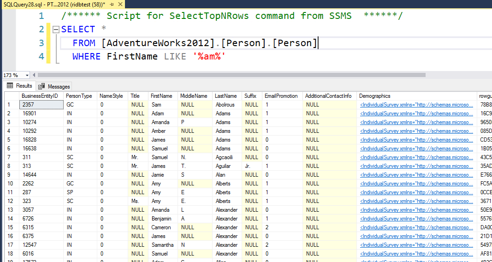2.'Letter1%'
We can search to see if there are any words starting with letter 'a' by doing..

3.'%Letter1'
We can search to see if there are any words ending with letter 'a' by doing..
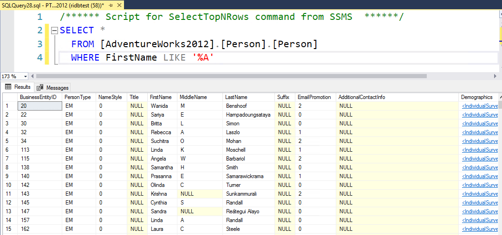4.'_Letter1%'
We can search to see if there are any words ending with letter 'a' and has only One letter before it by doing..
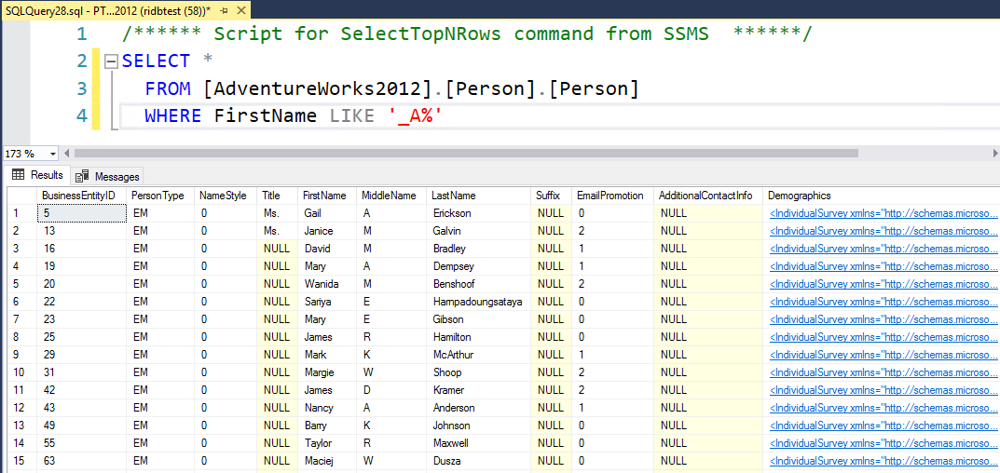5.'%Letter1_'
We can search to see if there are any words starting with letter 'a' and has only One letter before it by doing..
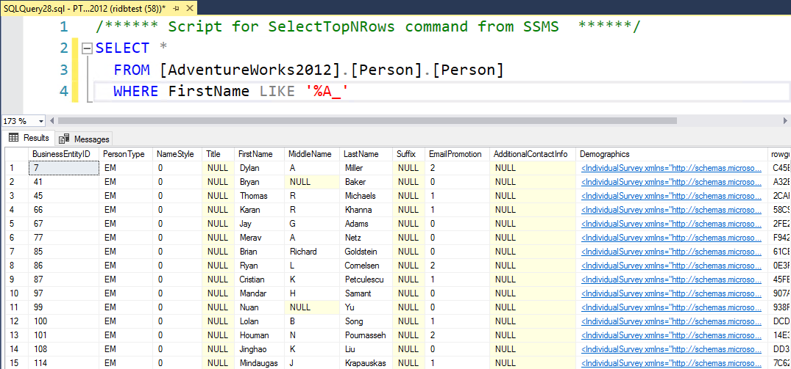6.'%Letter1%Letter2%'
We can search to see if there are any words which have the letter 'a' and has 'm' at any point in order by doing..
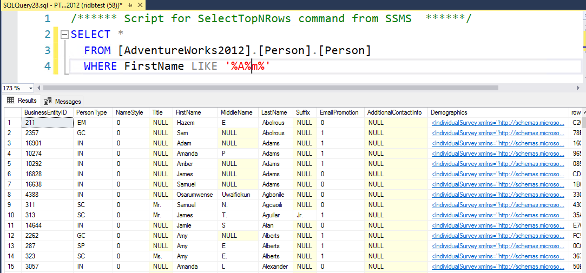Overall , if we use %- that means there could be any letter - one or more. Using _ means only one letter, if we can two letter we can use _ two times (__).
We will use [AdventureWorks2012].[Person].[Person] table for this Operator
SQL IN Operator
If we need to filter for certain N number of values in a table, we can do this using IN operator
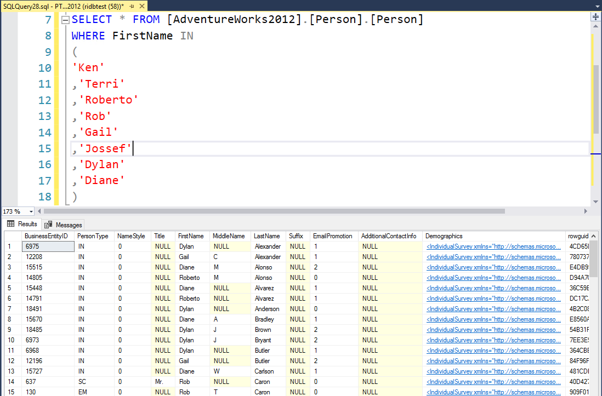Overall , this is helpful for cases with more than one value to filter on.
We will use [AdventureWorks2012].[Person].[Person] table for this Operator
SQL BETWEEN Operator
If we need to filter for values withing a certain range, we can do using BETWEEN operator
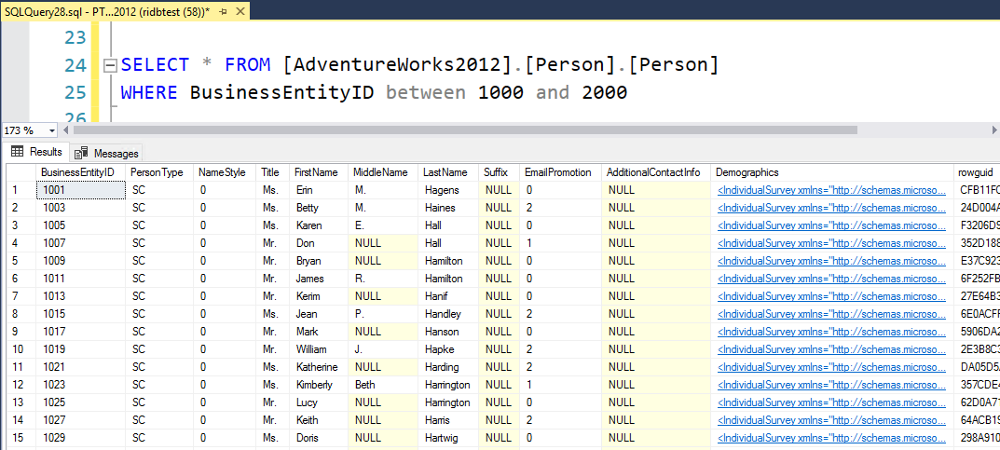We can use this operator for other things like Date range, ICD10 codes etc.
We will use [AdventureWorks2012].[Person].[Person] table for this Operator
SQL OR Operator
If we need to filter for values satisfying one or more conditions we can use OR operator
Here , for example we check for data where it satisfy's the condition of BussinessEntityID or Certain First Names.
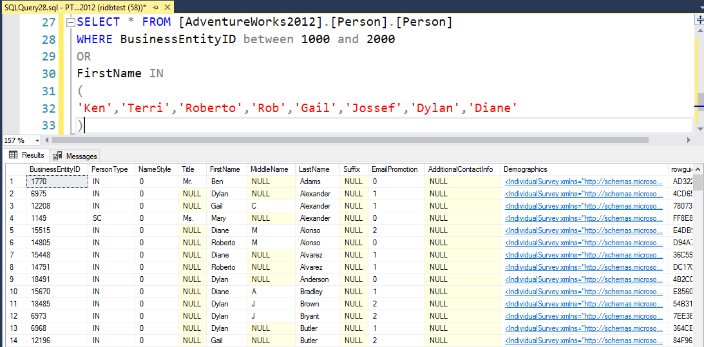We will use [AdventureWorks2012].[Person].[Person] table for this Operator
SQL AND Operator
If we need to filter for values satisfying all conditions on multiple fields- we can use AND operator
Here , for example we check for data where it satisfy's the condition of BussinessEntityID and Certain First Names.
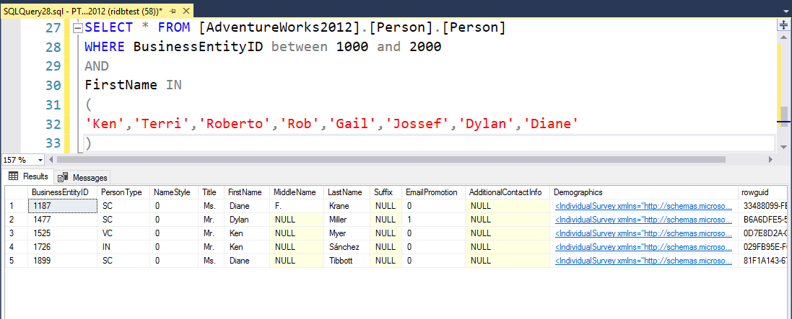This is usually a more restrictive filter, and returns lesser results.
We will use [AdventureWorks2012].[Person].[Person] and [AdventureWorks2012].[Person].[PersonPhone] table for this Operator
SQL EXISTS Operator
The EXISTS operator is used to test for the existence of any record in a subquery. It returns TRUE if the subquery returns one or more records.
Here , for example we check for records where BussinessEntityID exists in a different table.
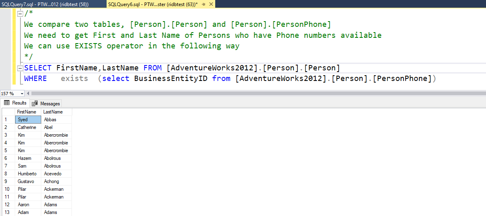A useful situation is when you have a recurring job, and need to load only new records, you can use NOT EXISTS in WHERE clause. This will prevent any duplicates being inserted.
We will use [AdventureWorks2012].[Person].[Person] and [AdventureWorks2012].[Person].[PersonPhone] table for this Operator
SQL ALL Operator
The ALL operator allow you to perform a comparison between a single column value and a range of other values.This returns a boolean value as a result, returns TRUE if ALL of the subquery values meet the condition. It means that the condition will be true only if the operation is true for all values in the range.
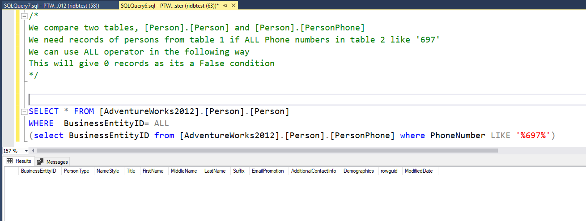We will use [AdventureWorks2012].[Person].[Person] and [AdventureWorks2012].[Person].[PersonPhone] table for this Operator
SQL ANY Operator
The ANY operator allow you to perform a comparison between a single column value and a range of other values.This returns a boolean value as a result. It means that the condition will be true if the operation is true for any of the values in the range.
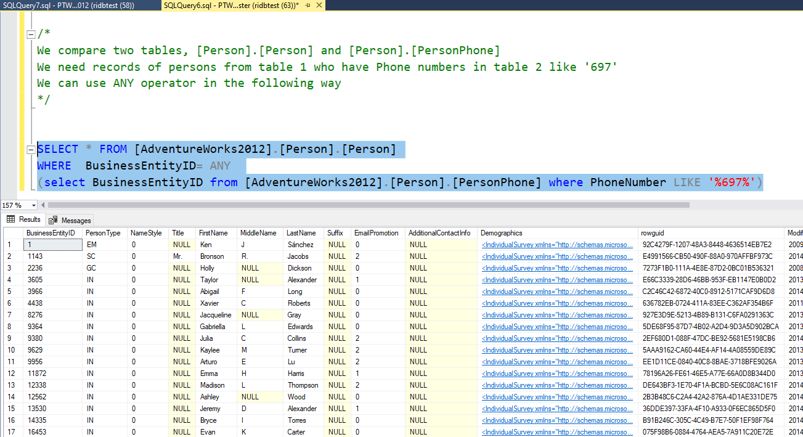We will use [AdventureWorks2012].[Person].[Person] and [AdventureWorks2012].[Person].[PersonPhone] table for this Operator
SQL SOME Operator
The SOME operator allow you to perform a comparison between a single column value and a range of other values.This returns a boolean value as a result. It means that the condition will be true if the operation is true for any of the values in the range.
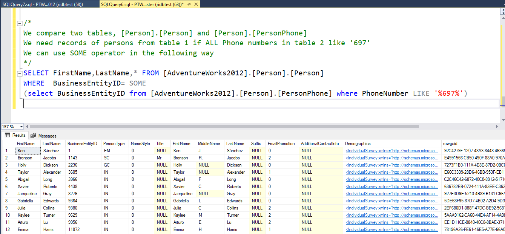